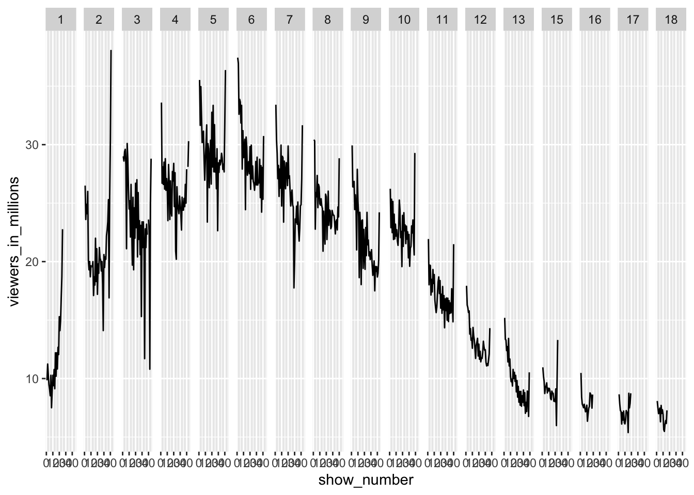
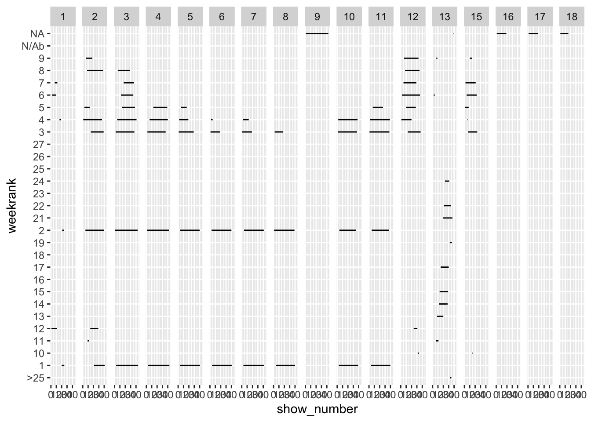
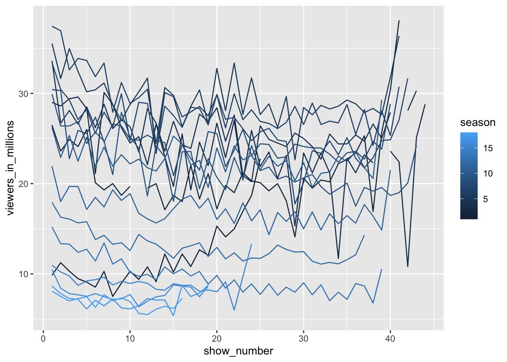

── Conflicts ────────────────────────────────────────── tidyverse_conflicts() ──
✖ readr::col_factor() masks scales::col_factor()
✖ purrr::discard() masks scales::discard()
✖ dplyr::filter() masks stats::filter()
✖ stringr::fixed() masks recipes::fixed()
✖ dplyr::lag() masks stats::lag()
✖ readr::spec() masks yardstick::spec()
ℹ Use the conflicted package (<http://conflicted.r-lib.org/>) to force all conflicts to become errors
library(timetk)library(smooth)
Warning: package 'smooth' was built under R version 4.3.3
Loading required package: greybox
Warning: package 'greybox' was built under R version 4.3.3
Registered S3 method overwritten by 'greybox':
method from
print.pcor lava
Package "greybox", v2.0.1 loaded.
Attaching package: 'greybox'
The following object is masked from 'package:lubridate':
hm
The following object is masked from 'package:yardstick':
accuracy
The following object is masked from 'package:tidyr':
spread
This is package "smooth", v4.0.2
Attaching package: 'smooth'
The following object is masked from 'package:yardstick':
accuracy
The following object is masked from 'package:parsnip':
pls
# Get ratings data from GitHubratings <- readr::read_csv("https://raw.githubusercontent.com/kkakey/American_Idol/main/metadata/ratings.csv")
Rows: 593 Columns: 17
── Column specification ────────────────────────────────────────────────────────
Delimiter: ","
chr (12): episode, airdate, 18_49_rating_share, timeslot_et, dvr_18_49, dvr_...
dbl (4): season, show_number, viewers_in_millions, nightlyrank
lgl (1): ref
ℹ Use `spec()` to retrieve the full column specification for this data.
ℹ Specify the column types or set `show_col_types = FALSE` to quiet this message.
# Graph of the number of viewrs by week and seasonggplot(ratings) +geom_line(aes(x=show_number, y=viewers_in_millions)) +facet_grid(. ~ season)

# Graph of the week rank by week and seasonggplot(ratings) +geom_line(aes(x=show_number, y=weekrank)) +facet_grid(. ~ season)

# Graphy of viewers by week and seasonggplot(ratings) +geom_line(aes(x=show_number, y=viewers_in_millions, group=season, color=season))

# Dropping NA viewship rowsratings <- ratings %>%drop_na(viewers_in_millions)# Tuning models on season and show number to predict viewershipset.seed(192)mm <-mars(mode ="regression", num_terms =5) %>%fit(viewers_in_millions ~ season + show_number, data = ratings)
Warning: package 'earth' was built under R version 4.3.2
Warning: package 'plotmo' was built under R version 4.3.2
Attaching package: 'plotrix'
The following object is masked from 'package:scales':
rescale
sm <-svm_rbf(mode ="regression", rbf_sigma =0.2) %>%fit(viewers_in_millions ~ season + show_number, data = ratings)fm <-rand_forest(mode ="regression", trees =2000) %>%fit(viewers_in_millions ~ season + show_number, data = ratings)
The questions I attempted to answer was how the season and show impact ratings. Based on exploratory analysis, it looked like viewship had peaked and was decreasing in future seasons. Based on the models created, the random forest performed the best with the lowest RMSE.